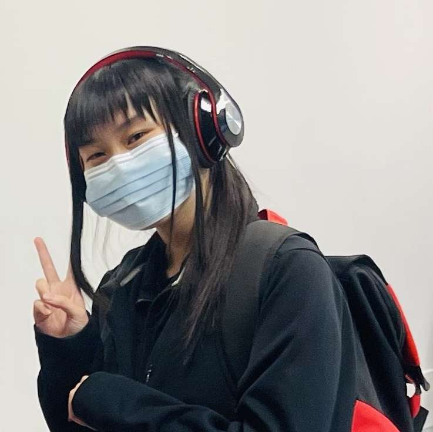

Lilas Guan's Resume

Summary
I'm an aspiring programmer actively pursuing hands-on experience in
front-end development and game programming. Committed to continuous learning,
I'm excited about the opportunity to contribute to a dynamic programming team
and expand my skills in a professional environment.
Education
-
Bachelor of Computer Science (BCompSc)
Concordia University - Montreal, QC, Canada
January 2024 - Present
-
Bachelor of Engineering - Computer Engineering (Incomplete)
Concordia University - Montreal, QC, Canada
September 2022 - December 2023
-
DCS/DEC in Computer Science Technology - Video Game Programming
LaSalle College - Montreal, QC, Canada
August 2019 - August 2022
-
DCS/DEC in Psychology & Participated in PSI Project
Collège de Maisonneuve - Montreal, QC, Canada
August 2017 - May 2019
-
Secondary School Diploma & SÉBIQ Diploma
École Internationale de Montreal - Montreal, QC, Canada
August 2012 - August 2017
Work experience
- Volunteer at the Geriatrics department
Hôpital Notre-Dame - Montreal, QC, Canada
2018-2019
- Distribute the meals and snacks to the respective patients.
- Walk the patients that need to exercise.
- Help nurses move the patients to their bed or seat.
- Listen to the patients worries and accompany them.
- Translate English to French from patient to doctor.
- Make rounds to make sure all patients' needs are met.
Skills
- C++
- C#
- Java
- HTML
- CSS
- Javascript
- SQL*Plus
- Unity
- Unreal Engine
- Blender
- Eclipse
- Visual Studio
- Visual Studio Code
- Oracle Database
- MediBang Paint Pro
- Audacity
- AviUtl
- Mixamo
- Microsoft Word
- Microsoft Excel
- Microsoft PowerPoint
- WPS
Languages
-
English
- Written : Fluent
- Spoken : Fluent
-
French
- Written : Fluent
- Spoken : Fluent
-
Japanese
- Written : Basic
- Spoken : Intermediate
-
Cantonese
- Written : Basic
- Spoken : Intermediate
-
Mandarin
- Written : Basic
- Spoken : Intermediate